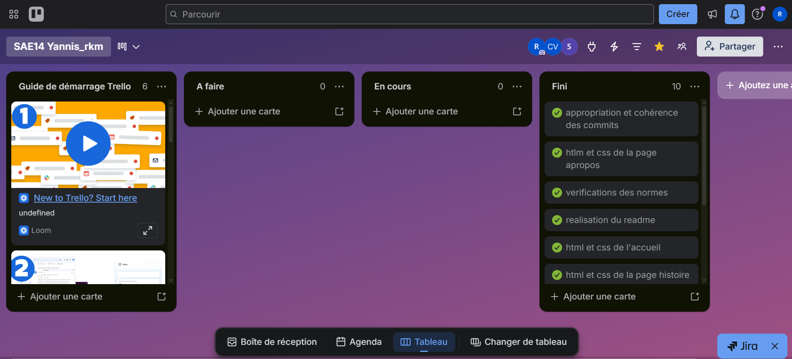
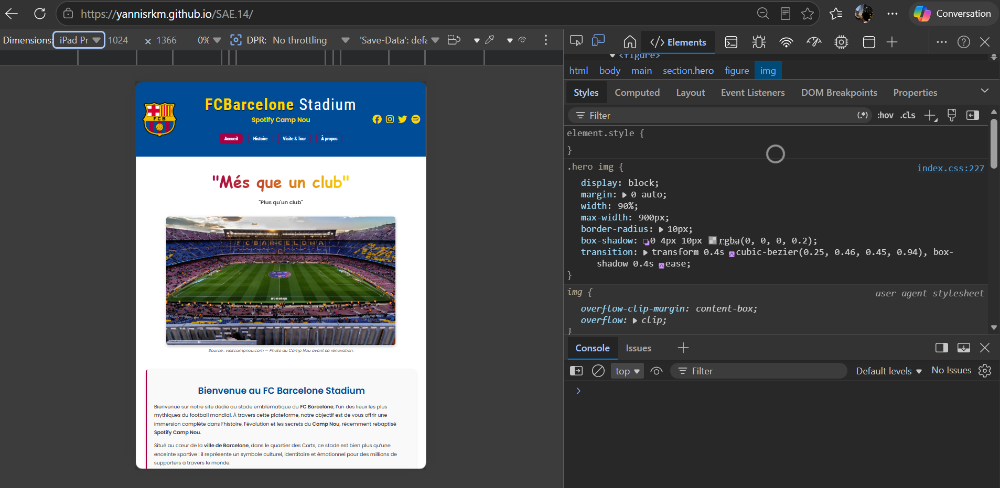
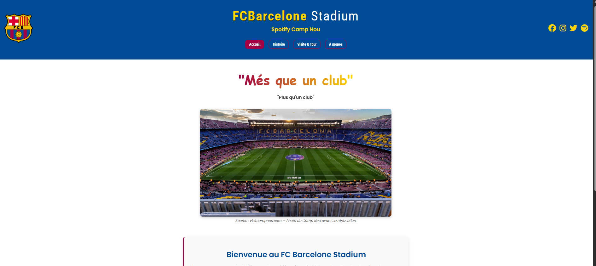

Projet 1.04 – Se présenter sur Internet
=======Projet 1.05 – Traiter des données et automatisation
>>>>>>> f7834ad8e4f4bf5d9df6fcb97343280a079d356eContexte & Cahier des charges
<<<<<<< HEAD Pour un technicien R&T, comprendre l'architecture web (front-end) est fondamental pour concevoir des portails captifs, des interfaces de supervision ou documenter des procédures. Ce projet exigeait le développement manuel ("from scratch") d'un site web en HTML5 et CSS3, sans l'aide de frameworks graphiques générateurs de code.
Centré sur le club du FC Barcelone (histoire, effectifs, stade), le livrable final devait respecter les normes sémantiques W3C, assurer une compatibilité sur une grande variété d'écrans (Responsive Design) et être déployé publiquement via un outil de versionnage. ======= Dans l'environnement d'un administrateur réseaux et sécurité, la manipulation de flux de données de masse (logs de pare-feu, métriques de supervision, inventaires d'infrastructures) nécessite des compétences solides en scripting et en interaction avec des architectures applicatives distantes.
Le cahier des charges de ce projet, réalisé en binôme, imposait le développement d'une suite logicielle modulaire en Python 3.11. L'application devait interroger de manière dynamique l'API REST d'OpenStreetMap et d'Overpass, extraire de larges volumes de données géographiques au format JSON (commerces de l'agglomération de Caen), traiter ces structures de données de manière algorithmique, et automatiser la génération de livrables documentaires standardisés aux formats Markdown et HTML. >>>>>>> f7834ad8e4f4bf5d9df6fcb97343280a079d356e
Démarche de production : Pas-à-pas vers le déploiement
La réalisation de ce projet s'est articulée autour d'un processus itératif, mobilisant les apprentissages critiques de ma formation face à des défis techniques concrets.
Étape 1 : Planification Kanban et Structuration
Apprentissage mobilisé (AC13.01) : Utiliser les outils métiers. Dès le lancement, j'ai organisé un workflow sur Trello. L'objectif n'était pas de coder immédiatement, mais de séquencer le travail (Pages, CSS, Accessibilité) pour garantir les délais.
📸 Trace d'avancement : Gestion Kanban

Mon tableau Trello est la preuve directe du suivi de ma production. Chaque carte déplacée vers la colonne "Terminé" marquait la validation d'un jalon technique du cahier des charges.
La Démarche Projet : De l'acquisition à la restitution
Pour mener à bien ce projet d'ingénierie logicielle, j'ai structuré mon travail selon une chaîne de traitement séquentielle et modulaire :
Étape 1 : Interrogation réseau et requêtage d'API REST
Action & Apprentissage mobilisé (AC13.01) : J'ai configuré et implémenté l'envoi de requêtes HTTP POST vers le serveur Overpass en écrivant des requêtes ciblées en langage OverpassQL (extraction des nœuds et chemins typés "shop"="supermarket" sur la zone administrative de Caen). Cette action m'a permis d'assimiler les mécanismes d'échange de données client-serveur et la manipulation de protocoles applicatifs.
Étape 2 : Algorithmes de filtrage et traitement statistique
Action & Apprentissage mobilisé (AC13.02) : J'ai développé un algorithme de tri et d'extraction dans le module stats.py. En effectuant des boucles itératives sur les structures de dictionnaires imbriquées du fichier JSON reçu, j'ai automatisé le comptage des occurrences par enseigne et calculé leurs proportions relatives afin d'extraire un classement statistique des trois enseignes majeures.
Étape 3 : Traitement d'images matricielles et intégration cartographique
Action & Apprentissage mobilisé (AC13.02) : Dans le script fiche_osm.py, j'ai codé une fonction de conversion mathématique pour traduire les coordonnées géographiques (latitude et longitude) en index de tuiles cartographiques selon le standard Slippy Map. À l'aide de la bibliothèque Pillow (PIL), j'ai automatisé le téléchargement du flux binaire de l'image PNG correspondante et l'enregistrement local de la carte de situation.
Étape 4 : Génération et industrialisation documentaire HTML
Action & Apprentissage mobilisé (AC13.01) : J'ai conçu un interpréteur de chaînes de caractères assemblant dynamiquement les données parsées sous forme de syntaxe Markdown standardisée. Enfin, j'ai exploité le module markdown dans le script md_to_html.py pour compiler automatiquement ces fichiers intermédiaires en pages web HTML pures, prêtes à être publiées sur un serveur.
Étape 2 : Développement de l'arborescence HTML5
Apprentissage mobilisé (AC13.02) : Écrire un programme. J'ai construit le squelette du site en utilisant exclusivement des balises sémantiques (<header>, <nav>, <section>) afin de garantir la validation du code par les outils d'audit du W3C.
Étape 3 : Intégration CSS3 et Résolution des conflits d'affichage
Apprentissage mobilisé (AC13.02) : Modifier une feuille de style dynamique. L'objectif de cette étape était d'appliquer une charte graphique fidèle au FC Barcelone tout en garantissant que le site s'adapte à tous les écrans (approche Mobile First). =======
Analyse d'un incident technique & Explication de la trace
🚨 Incident analysé : Exception KeyError sur les attributs optionnels du JSON
Analyse du problème : Lors des phases de tests de traitement sur des volumes de données élargis, l'application s'interrompait brutalement en levant une exception système fatale (KeyError). Le diagnostic mené à l'aide de la console de débogage a révélé que les objets de la base de données OpenStreetMap, alimentée de façon collaborative, possèdent des structures hétérogènes. Certains commerces ne contenaient pas les métadonnées attendues par mon script (comme la clé "addr:street" ou "phone" dans le sous-dictionnaire "tags"). L'accès direct par indexation (ex. : elem["tags"]["addr:street"]) provoquait le crash de la chaîne d'automatisation.
⚙️ Résolution technique et remédiation :
Pour pallier cette anomalie structurelle sans exclure ces établissements du traitement, j'ai implémenté une logique de programmation défensive. J'ai banni les accès directs par indexation au profit de la méthode sémantique .get() native de Python. Cette fonction interroge la présence de la clé : si elle existe, elle extrait sa valeur ; si elle est absente, elle injecte une valeur de substitution par défaut (ex. : "Adresse non renseignée"). Cette modification a rendu l'application totalement résiliente face à l'hétérogénéité des flux de données.
Explication et justification des traces techniques
📸 Trace 1 : capture_parsing_defensif.png
Cette capture d'écran isole l'implémentation de notre solution dans le script stats.py. On y observe l'utilisation des méthodes .get() sécurisées, fournissant la preuve de l'analyse critique de l'incident et de l'adaptation du code pour garantir la continuité du traitement par lots.
📸 Trace 2 : capture_output_pillow_html.png
Cette trace présente le livrable final compilé. Elle valide le fonctionnement de l'ensemble de la suite applicative : le document HTML final affiche proprement les métadonnées extraites et intègre parfaitement l'image matricielle de positionnement générée via Pillow, confirmant la réussite de l'automatisation. >>>>>>> f7834ad8e4f4bf5d9df6fcb97343280a079d356e
🚨 La difficulté technique : L'adaptation du site aux terminaux mobiles
Le problème : Lors du passage sur des résolutions restreintes (smartphones), mon interface "cassait". Les éléments de la galerie d'images se chevauchaient, provoquaient un défilement horizontal indésirable (overflow) et les proportions des visuels étaient écrasées.
⚙️ Analyse et remédiation via l'Inspecteur Web :
Pour cibler l'origine du bug, j'ai utilisé l'outil Inspecter de mon navigateur en simulant diverses tailles d'écrans. J'ai pu identifier en direct les règles CSS défaillantes. J'ai alors réécrit mon code en appliquant la propriété flex-wrap: wrap pour restructurer la grille, des Media Queries pour adapter la taille des polices, et la règle object-fit: cover pour recadrer les images sans distorsion.
📸 Preuve technique : Débogage Responsive

Cette capture montre mon environnement de débogage. On y voit l'outil de simulation de mobile du navigateur (DevTools) en action, validant la bonne exécution des correctifs CSS (Media Queries) que j'ai implémentés pour résoudre la distorsion.
Étape 4 : Déploiement et Traçabilité
Apprentissage mobilisé (AC13.01) : Enfin, j'ai utilisé Git pour versionner mon code final. Chaque commit a permis de documenter mes avancées jusqu'à la mise en ligne publique du service via l'hébergement GitHub Pages.
📸 Trace de rendu : Déploiement du site

Cette capture du livrable en production valide le succès de la chaîne d'intégration. Elle démontre un rendu stable et conforme à la charte graphique exigée.
Bilan du Projet & Prise de recul
La réalisation de bout en bout de cette application web a opéré une véritable transition dans mes méthodes de travail. Coder une interface adaptative m'a prouvé que le développement front-end exigeait une phase de test et de débogage (via l'inspecteur) tout aussi importante que l'écriture du code initial. =======
Bilan du Projet
Ce travail collaboratif a structuré ma démarche d'analyste et de développeur. Automatiser des processus d'acquisition et de traitement de données m'a fait prendre conscience de l'importance de concevoir des programmes tolérants aux pannes logiques. >>>>>>> f7834ad8e4f4bf5d9df6fcb97343280a079d356e
Compétences consolidées
La maîtrise du Document Object Model (DOM), le débogage actif via les DevTools des navigateurs, et la gestion du versionnage (Git) pour sécuriser le code en production.
Évolution des pratiques
Avec le recul, j'adopterais une démarche nativement "Mobile First" dès le maquettage du projet, au lieu d'adapter le site a posteriori. Cela rend le code CSS plus léger et limite l'apparition de bugs graphiques.
=======Prise de recul : Acquis majeurs
La maîtrise de la manipulation de fichiers de données structurés (JSON), l'exploitation d'APIs tierces via des requêtes HTTP, et la capacité à collaborer efficacement en binôme via une structure modulaire de script.
Prise de recul : Rétrospective & Perspectives
Avec le recul, j'intégrerais une gestion de persistance locale des données à l'aide d'une base de données SQLite légère. Cela permettrait de mettre en cache les résultats et d'éviter des requêtes réseau redondantes vers l'API, optimisant ainsi la bande passante et la rapidité d'exécution de l'application.
>>>>>>> f7834ad8e4f4bf5d9df6fcb97343280a079d356e<<<<<<< HEAD Validation des apprentissages finaux ======= Validation des compétences cibles >>>>>>> f7834ad8e4f4bf5d9df6fcb97343280a079d356e